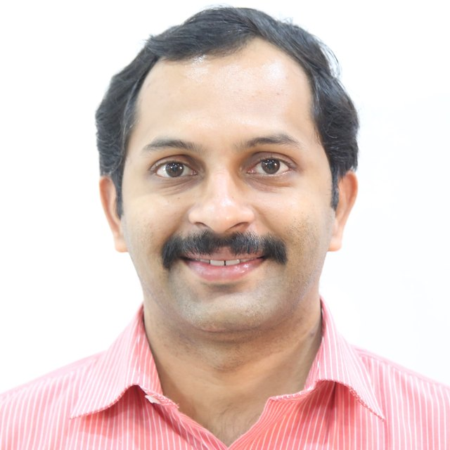

Dr. Vipin Venugopal
Assistant Professor (Selection Grade)
Amrita School of Artificial Intelligence, Amrita Vishwa Vidyapeetham, Ettimadai, Coimbatore, Tamil Nadu 641 112, India
An accomplished Artificial Intelligence (AI) and Deep Learning researcher with 15 years of academic experience and a Ph.D. specializing in computational modeling. My expertise lies in developing novel deep learning algorithms and AI-driven diagnostic tools, with a focus on computer vision applications.
I have a proven record of publishing in high-impact Q1 journals and a passion for mentoring students in cutting-edge AI technologies.
I welcome collaborative research and consultation projects in computer vision. Get in touch.
Opens your browser’s print window. Choose “Save as PDF”.
Research
- Citations
- h-index
- i10-index
From Google Scholar, updated .
My work sits between biomedical imaging, signal processing and machine learning. Current themes:
- Image restoration and enhancement: deblurring, denoising, illumination correction and contrast enhancement
- Dermatological image analysis: skin cancer detection and lesion segmentation
- Biomedical signal processing and wearable biomedical sensors and systems
- Neural networks and deep learning for diagnosis support
Profiles
Selected journal articles
- Loading publications…
No journal articles match that filter.
Selected conference proceedings
- Loading publications…
No conference papers match that filter.
Selected book chapters
- Loading publications…
Patent
Alkha Mohan, Jayakrishnan Anandakrishnan, Vipin Venugopal, Sayantani Ray, Aditya Kumar Samanta, Biswapati Jana, Syed Mahamud Hossein, Debdutta Mandal, Sasmit De and Deepsubhra Guha Roy. AI-Based Crop Health Monitoring Device. U.K. Design Patent No. 6468930, granted 9 September 2025. View registration
Doctoral students
I currently guide four Ph.D. scholars whose work spans radiographic image restoration, neurodegenerative disease diagnosis, underwater imaging and dermatology.
- Image restoration
- Medical diagnosis with AI
- Underwater imaging
- Dermatological AI
Ph.D. milestones, in order
- Coursework
- Comprehensive examination
- Qualifier examination
- Open Seminar 1
- Open Seminar 2
- Synopsis
- Open defence
-
Siju K.S.
Physics-Informed Architectures and Spatially Adaptive Frameworks for Radiographic Image Restoration
Sharper, more trustworthy radiographs from blurred or noisy scans, using models built on the physics of image formation.
- Coursework
- Comprehensive examination
- Qualifier examination
- Open Seminar 1
- Open Seminar 2
- Synopsis
- Open defence
Completed: coursework, comprehensive and qualifier examinations. Next: Open Seminar 1.
-
Kavitha K.
Deep Learning for Early and Explainable Diagnosis of Neurodegenerative Diseases
AI that helps clinicians recognise neurodegenerative conditions earlier and shows the reasoning behind its decisions.
- Coursework
- Comprehensive examination
- Qualifier examination
- Open Seminar 1
- Open Seminar 2
- Synopsis
- Open defence
Completed: coursework and comprehensive examination. Next: qualifier examination.
-
Biju K.V.
Deep Learning Frameworks for Restoration and Enhancement of Degraded Underwater Images
Recovering the colour, contrast and detail that water absorbs and scatters away.
- Coursework
- Comprehensive examination
- Qualifier examination
- Open Seminar 1
- Open Seminar 2
- Synopsis
- Open defence
Now: coursework. Next: comprehensive examination.
-
Sreedev R. Nair
Deep Learning for Accurate and Trustworthy Diagnosis of Skin Diseases from Dermatological Images
Helping identify skin conditions from images, building on our group’s work in dermatological image analysis.
- Coursework
- Comprehensive examination
- Qualifier examination
- Open Seminar 1
- Open Seminar 2
- Synopsis
- Open defence
Now: coursework. Next: comprehensive examination.
Peer review and memberships
Journals reviewed
- Computers in Biology and Medicine
- Computer Methods and Programs in Biomedicine
- Computer Vision and Image Understanding
- Multimedia Tools and Applications
- Medical & Biological Engineering & Computing
- PeerJ Computer Science
- IEEE Access
- Technology and Health Care
- Decision Analytics Journal
- Healthcare Analytics
- e-Prime: Advances in Electrical Engineering, Electronics and Energy
- Neuroscience Informatics
- Cancer Investigation
Conferences reviewed
- IEEE EMBC 2025, Copenhagen, Denmark
- IEEE ISBI 2024, Athens, Greece
- IEEE Conference on Artificial Intelligence (CAI) 2024, Singapore
- ICEMPS 2024, Thiruvananthapuram, India
- IEEE VTC2023-Fall, Hong Kong
- 3rd International Conference on Electrical, Computer, Communications and Mechatronics Engineering 2023, Tenerife, Spain
- IEEE Congress on Evolutionary Computation (CEC) 2023, Chicago, USA
- IEEE VTC2023-Spring, Florence, Italy
- CTIS 2023, Wuhan, China
- First International Conference on Signal Processing, Computation, Electronics, Power and Telecommunication 2023, Karaikal, India
- IEEE Symposium Series on Computational Intelligence 2022, Singapore
- IEEE World Congress on Computational Intelligence 2022, Padua, Italy
- IEEE ICCISc 2021, Idukki, India
Professional bodies
- Life Member, Indian Society for Technical Education (ISTE)
- Member, IEEE (Kerala Section, Region 10)
Education and experience
Experience
- Sep 2023 to presentAssistant Professor (Selection Grade)Amrita School of Artificial Intelligence, Amrita Vishwa Vidyapeetham, Coimbatore
- Dec 2011 to Feb 2021Assistant ProfessorDepartment of ECE, SJCET Palai, Kerala
Education
- 2021 to 2024Ph.D., Electronics and Communication EngineeringNational Institute of Technology PuducherryThesis: Development of deep image-to-scalar regressors for quality enhancement and segmentation of dermatological macro-imagesSupervisor: Dr. Malaya Kumar Nath
- 2008 to 2010M.Tech., Remote Sensing and Wireless Sensor NetworksAmrita School of Engineering, Coimbatore
- 2003 to 2007B.Tech., Electronics and Communication EngineeringMahatma Gandhi University, Kottayam
Contact
Amrita School of Artificial Intelligence
Amrita Vishwa Vidyapeetham, Amritanagar, Ettimadai
Coimbatore, Tamil Nadu 641 112, India